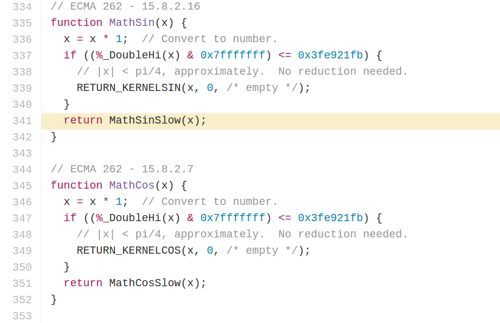

Have a repeating pattern
Tilings that lack a repeating pattern
Non-periodic tiling with the additional property that it does not contain arbitrarily large periodic patches
For example Penrose P3 tiling
Generating quasiperiodic tilings
Create n axes defined by their unit length
For each axes define normals
Shift normals by some distance
Build grids by shifting normals by unit vector
Multigrid is done
Find intersections of lines
For each intersection find multigrid coordinates of surrounding polygons. They will convert into vertices of tiles
Vertice in tiling is sum of n vectors, where each vector is determined by the angle of axis and its magnitude is coordinate on this axis
Result
Changing shift value
Changing angles of axes
Changing number of grids
Something else can take the place of rhombi. Circles, for example
A few words about angles in V8
